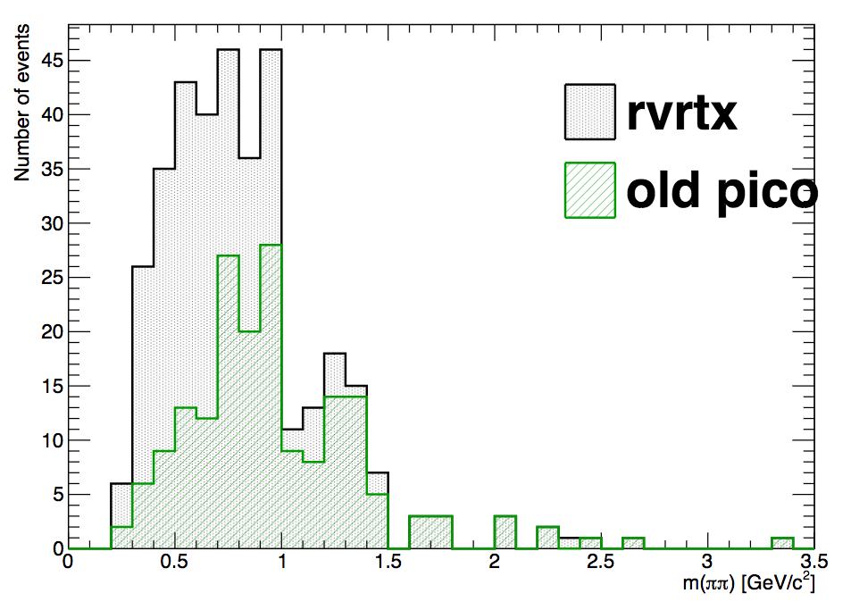
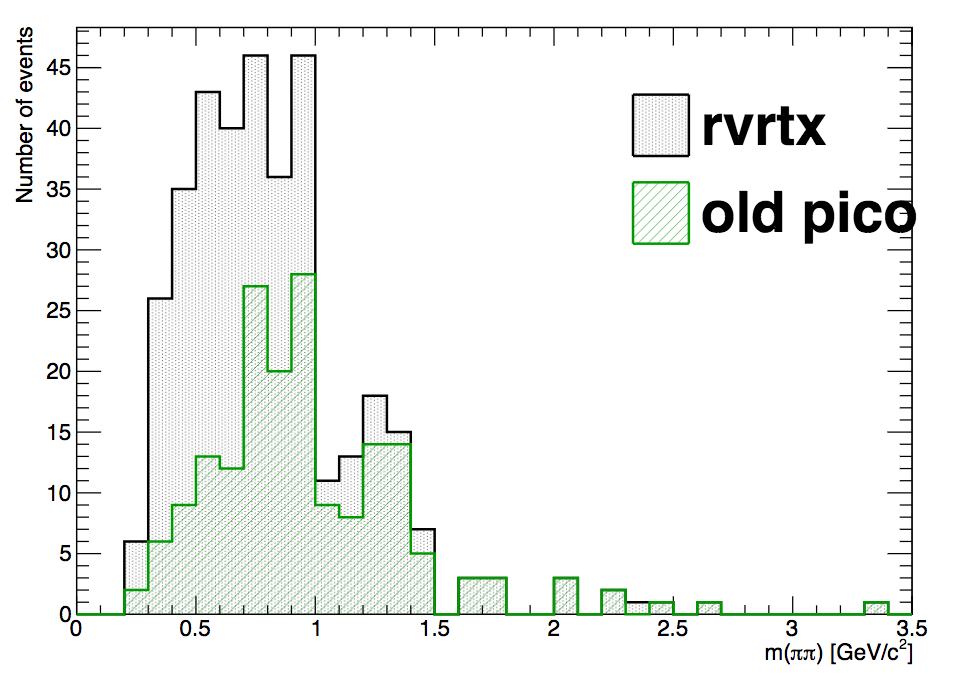

Vertex Reconstruction Status
Dmitri Smirnov for the S&C
November 3, 2017
STAR Analysis Meeting
Current Status Highlights
- Since last Collaboration Meeting
- Independent tests by UPC/LFS and HF groups with real data (Thanks!)
- No major changes in vertex finding algorithms
- Highlighted modifications introduced under the S&C's watch
- Beam line constraint is available and treated the same way in both
PPV andMinuitVF - With
beamline3D option the full track and the beam line error matrices are used in the fit - New functionality does not affect past behavior, i.e. the previously existed options are backward compatible
- No change in primary track candidate selection
- Re-vertexing is now possible with
muDst tracks
- Beam line constraint is available and treated the same way in both
Beam Line Options
- Prior to
SL16k
| ⟨ w/o beamline ⟩ | beamline
| beamline3D
| ||
|---|---|---|---|---|
| 3D fit | naive 1D | 1D fit | 3D fit | |
PPV
| ✗ | ✔ | ✗ | |
MinuitVF
| ✔ | ✔ | ||
- naive 1D fit: Position of local peaks in binned (and weighted) track distribtion along \( z \)
- 1D fit: By TMinuit with one free parameter—vertex position along \( z \). Forced to stay on beam line
- 3D fit: By TMinuit with vertex coordinates \( (x, y, z) \) as free parameters
Beam Line Options
-
SL17eand thereafter
| ⟨ w/o beamline ⟩ | beamline
| beamline3D
| ||
|---|---|---|---|---|
| 3D fit | naive 1D | 1D fit | 3D fit | |
PPV
| ✔ | ✔ | ✔ | ✔ |
MinuitVF
| ✔ | ✔ | ✔ | |
- naive 1D fit: Position of local peaks in binned (and weighted) track distribtion along \( z \)
- 1D fit: By TMinuit with one free parameter—vertex position along \( z \). Forced to stay on beam line
- 3D fit: By TMinuit with vertex coordinates \( (x, y, z) \) as free parameters
Independent Tests by HF group
- Many thanks to S. Radhakrishnan and X. Dong for testing
beamline3D option in Run 16 dAu 200 GeV data. See S&C Meeting, April 26, 2017

|
Observed expected features including
|
Independent Tests by UPC/LFS group
- Many thanks to L. Adamczyk, L. Fulek, and R. Sikora for performing
embedding and data studies with
PPV . Tested recent tunes ofbeamline options and re-vertexing withmuDst . See S&C Meeting, September 25, 2017

 

|
|
Track Matching to BTOF
(and other fast detectors)
- In STAR fast detectors are used to mitigate effect on vertex position by pile-up tracks in slow TPC
- Track weight is based on the hit/signal and status of detector cell to which track is projected
- Track weights then translate to overall vertex rank
Track Points to Cell Cell Status Cell Signal Track weight ✔ ✔ ✔ higher ✔ ✔ ✗ lower ✔ ✗ — no change ✗ — — no change
Issues with BTOF Track Matching
- Tests by UPS/LFS uncovered inconsistencies in BTOF matching. See details in G. Van Buren's blog
- BTOF track matching is available in three variants:
-
StGenericVertexFinder : Module-based matching used in vertex ranking -
StTrack2FastDetectorMatcher : Aggregate vertex flags based on cell-based match -
StBTofMatchMaker : Sets matching flags forStMuTrack s
-
- BTOF matching flags for
muDst tracks do not reflect track matching in vertex finders - Similarly aggregate vertex counters for daughter tracks are not based on
StMuTrack flags - The above may lead to inconsistent track selections depending on fields used in
muDst trees
Summary and Action Items
- Independent tests by PWGs added confidence in recent Vertex Finder modifications
- Re-vertexing is now possible with
muDst tracks - Moving towards solutions for remaining issues
- Ongoing discussion with TOF team on a possibility to converge to a single BTOF matching algorithm
- A related issue with BTOF is its geometry based on
Geant volumes instead of theROOT 'sTGeoManager - Common approach to misaligned
TGeo allow for better matching accuracy - Considering an option of splitting
StiMaker into a global and primary track makers with detector-matching and vertex finding run in between - Lessons learned from BTOF should be extended to ETOF and calorimeters